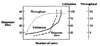
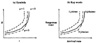
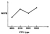
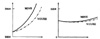
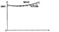
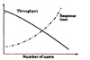
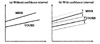
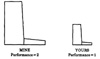
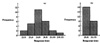
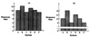

In practice, it is necessary to make several trials before arriving at the final graph. Several different scale ranges and x-y variable pairs should be tried, and the graph that presents the message most accurately, simply, concisely, and logically should be chosen.
|
BOX 10.1 Checklist for Good Graphics
- 1. Are both coordinate axes shown and labeled?
- 2. Are the axes labels self-explanatory and concise?
- 3. Are the scales and divisions shown on both axes?
- 4. Are the minimum and maximum of the ranges shown on the axes appropriate to present the maximum information?
- 5. Is the number of curves reasonably small?
(A line chart should generally have no more than six curves).
- 6. Do all graphs use the same scale?
(Multiple scales on the same chart are confusing.)
- 7. Is there no curve that can be removed without reducing the information?
- 8. Are the curves on a line chart individually labeled?
- 9. Are the cells in a bar chart individually labeled?
- 10. Are all symbols on the graph accompanied by appropriate textual explanations?
- 11. If the curves cross, are the line patterns different to avoid confusion?
- 12. Are the units of measurement indicated?
- 13. Is the horizontal scale increasing from left to right?
- 14. Is the vertical scale increasing from bottom to top?
- 15. Are the grid lines aiding in reading the curves? (If not, the grid lines should not be shown.)
- 16. Does this whole chart add to information available to the reader?
- 17. Are the scales contiguous? (Breaks in the scale should be avoided or clearly shown.)
- 18. Is the order of bars in a bar chart systematic?
(Alphabetic, temporal, or best-to-worst ordering is to be preferred over random placement.)
- 19. If the vertical axis represents a random quantity, are confidence intervals shown?
- 20. Are there no curves, symbols, or texts on the graph that can be removed without affecting the information?
- 21. Is there a title for the whole chart?
- 22. Is the chart title self-explanatory and concise?
- 23. For bar charts with unequal class interval, is the area and width representative of the frequency and interval, respectively?
- 24. Do the variables plotted on this chart give more information than other alternatives?
- 25. Does the chart clearly bring out the intended message?
- 26. Is the figure referenced and discussed in the text of the report?
|
10.3 COMMON MISTAKES IN PREPARING CHARTS
In this section, a number of mistakes seen frequently in performance reports and papers are discussed. It is easy to find charts with these mistakes even in articles published in technical journals.
- 1. Presenting Too Many Alternatives on a Single Chart: Regardless of which chart is used, the key goal of data presentation is to make the reader’s task easier. Most readers cannot grasp more than five to seven messages at a time. Therefore, a chart with too many curves, bars, or components should be avoided. In general, a line chart should be limited to 6 curves. A column chart or bar chart should be limited to 10 bars. A pie chart should be limited to 8 components. The number of cells, and hence the number of bars, in a histogram should indicate that each cell has at least five data points. All these are rules of thumb and can be overridden if, in the judgment of the analyst, it would help to make the point.
- 2. Presenting Many y-Variables on a Single Chart: Figure 10.4 shows a line chart of response time, utilization, and throughput as a function of number of users. Plotting four y-variables saves space but leaves the task of associating the curves with the appropriate scales to the reader. It is difficult for the reader to get the intended message. Presenting four different graphs would have been more clear and logical. Combining unrelated graphs is commonly done to meet the length requirements of papers in journals.
- 3. Using Symbols in Place of Text: Figure 10.5 shows a line chart that is difficult to read since there is no text on the chart. The reader is left to flip through the report and search for what each symbol represents. While this may seem to have saved some time for the writer of the report, the writer’s time was actually wasted since most readers are likely to skip the figure and the report as well.

FIGURE 10.4 Too many variables plotted on a single chart make it difficult to read.

FIGURE 10.5 Keywords in place of symbols make a chart easier to read.
- 4. Placing Exraneous Information on the Chart: The goal of each figure is to convey a particular message to the reader. Any information that detracts the reader from getting the message is extraneous and should be removed. For example, grid lines on a line chart should be there only if the reader is expected to read the values precisely. Again, the granularity of the grid should be matched to the accuracy required.
- 5. Selecting Scale Ranges Improperly: Most graphs are prepared automatically by programs that have several built-in rules to select the scales based on the minimum and maximum values seen in the data. However, in practice it is often necessary to manually override this automatic selection and specify the ranges to be shown. This is particularly necessary if some part of the range does not add any further information.
- 6. Using a Line Chart in Place of a Column Chart: The lines joining successive points on a line chart signify the fact that the intermediate values can be approximately interpolated. Figure 10.6 shows an example of the misuse of a line chart. The performance in MIPS for various CPU types are plotted on the chart. Since the fractional values of CPU types have no meaning, a column or pie chart should have been used in this case.

FIGURE 10.6 Line chart should not be used if intermediate values cannot be interpolated.
10.4 PICTORIAL GAMES
Since a picture is worth a thousand words, one can deceive as much with a picture as would require at least a thousand words. In this section, a number of techniques that are known to have been used deliberately by analysts to hide the truth and to misguide the readers are presented. Unlike the mistakes discussed in Section 10.3, these are not a result of carelessness or inexperience of the analyst but a result of a careful plan to exaggerate the differences. Such pictorial games are more common in the trade press and in advertisements than in the technical literature.
- 1. Using Nonzero Origins to Emphasize the Difference: Normally both axes of a graph should meet at the origin, that is, at zero value of the x-and y-coordinates. By moving the origin and by appropriately scaling the graph, it is possible to magnify or reduce the perception of performance difference. In Figure 10.7, the same performance data is shown in two different graphs using different scales and origins. The two graphs lead to two different conclusions:
- (a) MINE is much much better than YOURS and
- (b) MINE and YOURS are almost the same.
Which is the right graph? None of the two!
The right way to scale a graph is to choose scales such that the vertical height of the highest point is at least three-quarters of the horizontal offset of the right-most point. This is known as the three-quarter-high rule. Also, the origin should be represented by (0, 0) on the two axes unless there is a justifiable reason to do otherwise. The performance data of Figure 10.7 is replotted in Figure 10.8 using the three-quarter-high rule.

FIGURE 10.7 Inappropriate scaling can be used to emphasize or conceal the difference.

FIGURE 10.8 Three-quarter-high rule requires that the height of the highest point be at least three-quarters of the horizontal offset of the rightmost point.
- 2. Using Double-Whammy Graph for Dramatization: Two curves on the same graph can have twice as much impact as one. This can be used to amplify the goodness or badness of the information. If there are two metrics that are related, knowing one allows predicting the behavior of the other. Throughput and response time are examples of such metrics. For instance, as the response time to database queries goes up, the throughput in terms of transaction per second goes down. The news that the performance of YOUR system goes down steeply as the number of users is increased can be conveyed by plotting either of the two metrics. However, by plotting both (see Figure 10.9), impact is twice as much, because for an unguarded reader, YOUR system is losing on both metrics.
- 3. Plotting Random Quantities without Showing Confidence Intervals: Most performance measurements result in a random quantification of the performance. If the measurement were to be repeated, the result would not be exactly the same. In many cases the variance of results is high. This is particularly the case if there are many uncontrollable factors that impact the result. In such cases, it is necessary to repeat the experiment many times and to plot means. However, means alone are not enough when comparing two random quantities. Overlapping confidence intervals are generally enough to deduce that the two random quantities are statistically indifferent. This is explained further in Chapter 13.

FIGURE 10.9 A double-whammy graph has twice as much impact.

FIGURE 10.10 Confidence intervals should be shown for random quantities.
Figure 10.10 shows performance curves for two systems with and without confidence intervals. Figure 10.10a, without the confidence interval, leads one to believe that MINE is better than YOURS. Figure 10.10b, on the other hand, shows that the two systems cannot be differentiated with the current data. More repetitions would be required to claim superiority of one over the other.
- 4. Pictograms Scaled by Height: One way to depict difference in performance is to draw appropriately scaled pictures of systems. Figure 10.11 shows one such example. The performance of workstation MINE is twice that of YOURS. This is depicted using a picture of workstation MINE, which is twice as high and twice as wide as YOURS. The total area of MINE is four times that of YOURS, giving an impression of MINE being four times superior to YOURS. The correct way to scale a pictogram is by the area. For example, in Figure 10.11 the height and width of MINE should have been only 1.414 times those of YOURS so that the area of MINE would be twice that of YOURS.
- 5. Using Inappropriate Cell Size in Histograms: Selecting cell size for histograms is always a problem. Anyone who has tried plotting a histogram for real data knows that it requires more than one attempt. If cells are too large, all data points fall in a few cells. If the cells are too small, the histogram lacks smoothness. By appropriately selecting the cell size, one can get the data to look like the desired distribution.

FIGURE 10.11 Pictograms scaled by height exaggerate the performance claims.

FIGURE 10.12 Inappropriate bucket sizes can result in a loss of information or in too much detail.
Figure 10.12 shows two histograms for the same data. The first one looks more like a normal distribution while the second one looks like an exponential distribution. There are several statistical tests for determining whether the data fits the distribution under consideration. Most of these tests require that there be at least five observations in each cell. Nevertheless, given enough data points it is possible to statistically fit more than one distribution.
- 6. Using Broken Scales in Column Charts: An effect similar to that of nonzero origins discussed earlier is achieved in column charts and histograms by breaking the scale in the middle, as shown in Figure 10.13. It allows one to amplify negligible performance differences. In the figure, looking at chart (b) concludes that there are significant performance differences among systems, whereas chart (a) would be used to give the opposite message. Instead of a broken scale, the same effect can be achieved by using a nonzero origin.

FIGURE 10.13 Histograms with a broken scale are often used to exaggerate small differences.
){kind=link}
){kind=link}
){kind=link}
){kind=link}
){kind=link}
){kind=link}
){kind=link}
){kind=link}
){kind=link}
){kind=link}
){kind=link}
){kind=link}
){kind=link}
){kind=link}
){kind=link}
){kind=link}
){kind=link}
){kind=link}
){kind=link}
){kind=link}